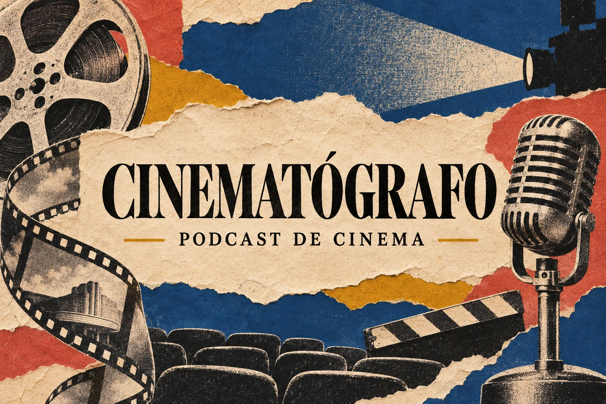

SOFTWARE · CURADORIA · VIBE CODING
Radar de Curadoria
Software autoral para coletar, analisar e organizar informações da web. Concebi sua lógica, os critérios e quatro módulos conectados, com desenvolvimento por vibe coding e apoio de IA.
TEXTO · PESQUISA · EDIÇÃO
Escrevo e edito para marcas, empresas e projetos editoriais, com trabalhos em marketing, jornalismo, áudio e audiovisual.
Conheça meu trabalho ↘
01 / SELEÇÃO DE TRABALHOS
SOFTWARE · CURADORIA · VIBE CODING
Software autoral para coletar, analisar e organizar informações da web. Concebi sua lógica, os critérios e quatro módulos conectados, com desenvolvimento por vibe coding e apoio de IA.

PRODUTO · E-COMMERCE · EDIÇÃO
Redação e edição para e-commerce, otimização para SEO e GEO e revisão crítica de textos gerados por IA. Cuidado editorial nas descrições, nos benefícios e nos modos de uso de produtos.

JORNALISMO · REPORTAGEM
Reportagem sobre pesquisa, sociabilidade e homossexualidade no interior do Rio Grande do Sul, publicada na Revista Arco.

NEWSLETTER · COMUNICAÇÃO INTERNA · E-MAIL
Uma ideia minha para dar visibilidade à documentação técnica, que se tornou um espaço de comunicação e proximidade durante a pandemia.


LP · BLOGPOSTS · REDES SOCIAIS
Planejamento de campanhas, estratégia e redação para blogs, e-mail marketing, landing pages e redes sociais, em projetos B2B e B2C para agência e empresa de software de gestão.

JORNALISMO TRANSMÍDIA · ÁUDIO/PODCAST
Projeto de jornalismo transmídia sobre as narrativas de quem convive com o adoecimento mental, em três mídias: podcast, curadoria de conteúdo e lambe-lambe.

PODCAST · CINEMA · 2013 / 2014
Podcast universitário de cinema que cocriei e produzi entre 2013 e 2014, com pesquisa, curadoria de temas, roteiro e apresentação. Minha primeira experiência com o formato.

VÍDEO ENSAIO · INSTITUCIONAL
Um vídeo ensaio sobre No Portal da Eternidade e o institucional da FACOS / UFSM. Dois trabalhos de escrita audiovisual, entre a reflexão sobre cinema e a comunicação institucional.
02 / COMO EU TRABALHO
Entender o assunto, as fontes e o público antes de escrever.
Organizar a informação e definir o que cada conteúdo precisa entregar.
Criar conteúdos, formatos e soluções, explorando ideias e ajustando a linguagem a cada contexto.
Revisar clareza, precisão, consistência e qualidade do texto.

03 / SOBRE MIM
Escrevo, crio, reviso, planejo e organizo ideias para transformar informações em conteúdos claros, relevantes e acessíveis. Sou jornalista e tenho experiência em redação, edição e estratégia de conteúdo para marcas, empresas de tecnologia e e-commerce. Meu trabalho combina pesquisa, criatividade e análise, passando por comunicação B2B e B2C, SEO, comunicação corporativa, reportagens e roteiros para rádio, podcasts e audiovisual.
A base da minha formação enquanto comunicadora está no jornalismo científico e cultural, na Revista Arco e na Rádio Universidade da UFSM. O cinema também faz parte desse trabalho, com o podcast universitário Cinematógrafo, que cocriei em 2013, e a escrita de roteiros audiovisuais. Essas experiências se somam ao trabalho com marketing, comunicação interna e documentação técnica e aos cinco anos de redação e edição na Beleza na Web, do Grupo Boticário, entre agosto de 2021 e novembro de 2026.
Sou formada em Jornalismo pela UFSM e especialista em Literatura Brasileira pela UFRGS. Entre meus projetos autorais estão o Construa-me uma Ponte, de jornalismo transmídia, e o Radar de Curadoria, software que concebi e desenvolvi com apoio de IA e vibe coding.
04 / VAMOS CONVERSAR
Para oportunidades de trabalho, projetos editoriais e pedidos de amostras:
ninaspaniak@gmail.com ↗